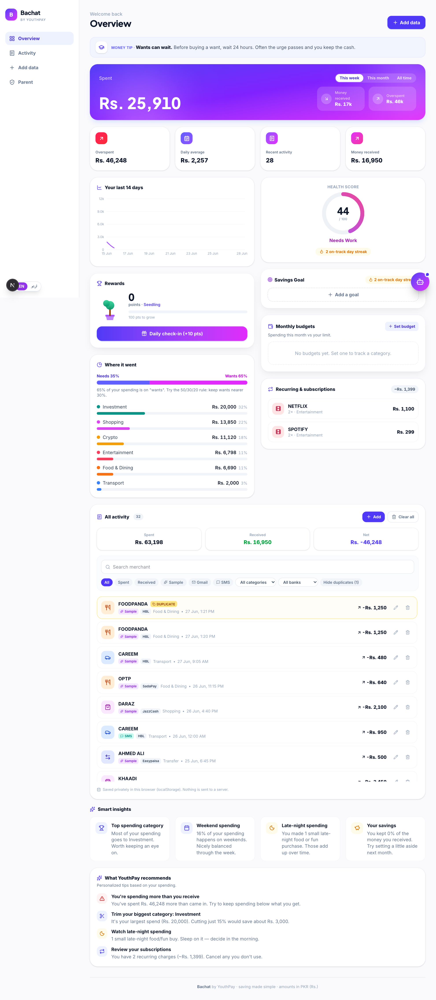
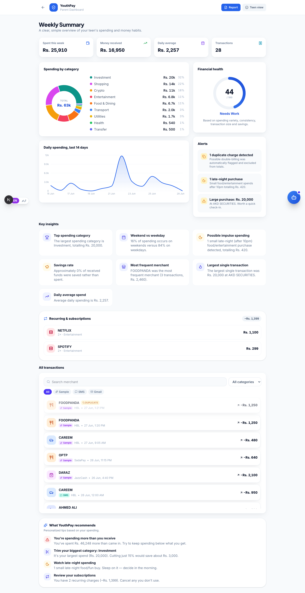

Financial-intelligence for Pakistani teenagers (13–17) and their parents.
“Bachat” = savings in Urdu. Saving made simple.
Naimatullah Khan · solo build · YouthPay Challenge 1
Live: youthpay-hackathon.vercel.app · Repo: github.com/Cyber-Naimo/youthpay-hackathon
Every HBL/UBL/Easypaisa/JazzCash transaction sends an email or SMS — raw, ugly, ignored.
No visibility into a teen's spending, no way to guide habits early.
First accounts, wallets, even crypto — but no tool teaches needs vs wants or saving.
The real job: not “build another bank” — parse what they already receive and turn it into understanding + better habits.
Gmail auto-fetch (OAuth) · .eml upload/folder · paste SMS · manual entry · or instant sample data.
Where's the money going? What habits to fix? Impulse spending? How much saved? What would YouthPay advise?


Teen “Bachat” (playful, light-aurora) · Parent (trustworthy, PIN-gated, PDF report). Bilingual English / Roman Urdu.
Next.js 16 · React 19 · Tailwind v4 · Recharts · Gemini · Supabase (optional) · Vercel.
localStorage source-of-truth + pub/sub keeps every view in sync; Supabase one env var away.
Fast, free, offline-capable; AI only for unknown formats, with graceful fallback.
Each one earns its place by answering a question or building a habit — not for the screenshot.
localStorage + graceful AI fallback → it always works, even offline or when Gemini is rate-limited.
Gmail pulls raw RFC822 and reuses the exact upload parser. Less surface area, consistent output.
Re-sync/poll never duplicates; genuine double-charges still flagged.
No full auth (PIN instead), no real-time push (5-min poll) — shipped the MVP that matters.
| Criterion | How Bachat scores |
|---|---|
| Product thinking · 25% | Solves the real gap; teaches habits; parent visibility — not generic charts |
| Technical execution · 20% | Layered pipeline, reactive store, MIME parser, regex+AI hybrid, 0 build errors |
| Full-stack · 15% | Frontend · API/OAuth · AI · DB · Gmail API · Vercel deploy |
| UX · 15% | Teen + parent flows, bilingual, loaders, PDF, “both can actually use it” |
| Speed & prioritization · 10% | Pipeline + 2 dashboards first; AI as enhancement, not dependency |
| Founder mindset · 10% | Crypto, investments, gamification, auto-sync, scam tips — beyond the task |
Bachat by YouthPay · youthpay-hackathon.vercel.app